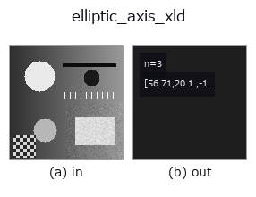

features op• Data kinds: contour → match
• Call: fullseye.apply(img, "elliptic_axis_xld", a=0.5, b=0.5) (the 2-D model is one image plus two scalar knobs a,b∈[0,1])
• HALCON equivalent: elliptic_axis_xld (the HALCON reference is a useful guide to its meaning and parameters)
• GPU: none (CPU reference implementation only)

*The figure is the actual output on a synthetic 128×128 input. Left: input, right: output. Point clouds are drawn as a top-down scatter (brightness = z), 1-D series as a line plot, volumes as the maximum-intensity projection along z, videos as the middle frame, complex images as magnitude; return values that are not pictures are shown as the values themselves.*
*Knob a does not change the output (measured: identical at 0.1 / 0.5 / 0.9).*
*Knob b does not change the output (measured: identical at 0.1 / 0.5 / 0.9).*
Stages (the ops that come before → this op, left to right):
▸ elliptic_axis_xld: stages (docs site)
Fits an ellipse to the contour with the most points (cv2.fitEllipse) and returns (Ra, Rb, Phi) as a 3-component match sort vector — Ra/Rb are the semi-major and semi-minor axes [px], Phi the main-axis angle (radians, counter-clockwise from the column axis, greater than -π/2 and at most π/2). The same three values as HALCON's elliptic_axis_xld (Parameters of the equivalent ellipse of contours or polygons.).
The same shape as the region version elliptic_axis. Because it is a least-squares fit to the contour points, it does not match the values from the region moments (30x70 rectangle: region (40.41, 17.31, 0.0) vs xld (44.53, 16.99, 0.0018)).
★Until 2026-09-26 it returned a single scalar, the minor/major axis ratio (docs/hardening/dimensional-features-were-normalised.md).
a and b are unused. If no contour has 5 or more points it returns 0 (a scalar). Requires cv2.
• gallery2d_features family guide
• Sample-data catalog (download URLs / licences) — 2-D uses skimage.data (BSD/public domain) plus synthetic images; 3-D lists download URLs for real data sources (Stanford, PDS, …).
• Operator provenance and references — the sources of the research/methods this op family came from.
• The canonical algorithm (author, year) and its uses are named in the family usage guide above.
The program below has been verified to run (same input as the figure). In Studio's help this block becomes buttons that load and run it on the spot.
threshold 0.50 0.50 sk_find_contours 0.50 0.50 elliptic_axis_xld 0.50 0.50
▸ Load this pipeline · Load & run
• gallery2d_features — py -3.11 examples/gallery2d_features.py
match as input)features)effective_bit_depth · blob_count · area_frac · count_contours · total_length · vol_count · sk_euler · sk_entropy_feat
*Provenance: ops.py — 2D operator registry. This per-op note is generated by tools/opdocs.py md (do not hand-edit).*
© 2026 Kazufumi Furuse — Fullseye operator documentation. Licensed under Apache-2.0.